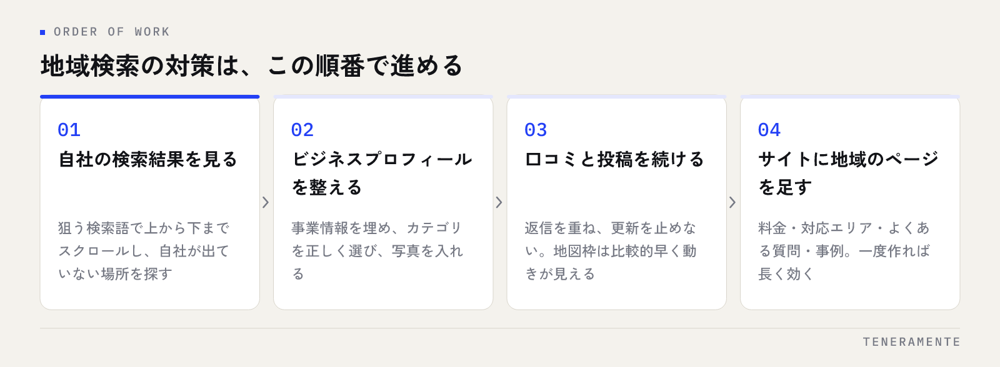

「ローカルSEO」と「MEO」は、ほとんど同じ意味で使われることもあれば、まったく別のものとして説明されることもあります。ローカルSEOとMEOの違いは、対象にしている表示枠の広さにあります。ここを取り違えたまま施策を選ぶと、手を動かしているのに地域の検索から自社が出てこない、という状態が続きます。
📌 この記事の結論
MEOはGoogleマップと地図枠での表示を対象にした施策、ローカルSEOは地図枠を含む「地域検索の結果全体」を対象にした考え方です。MEOはローカルSEOの一部と捉えるのが実務では扱いやすく、地域ビジネスは両方に取り組む必要があります。着手順はMEOが先です。
01ローカルSEOとMEOは、指している範囲が違う
MEO（Map Engine Optimization）は、日本で生まれた言葉です。Googleマップや、検索結果の上部に出る地図枠に自社を表示させるための施策を指します。実務では、Googleビジネスプロフィール（GBP）の情報を整え、口コミを集め、投稿を続ける作業がその中心になります。
一方のローカルSEO（Local SEO）は、英語圏で一般的に使われている言葉です。「地域名＋サービス名」で検索されたときに、検索結果のページ全体で自社を見つけてもらうための取り組みを広く指します。地図枠はその一部であり、地図の下に並ぶ通常の検索結果や、比較サイト・ポータルサイトでの見え方も含みます。
つまり、MEOはローカルSEOに含まれる、という関係で理解するのが実務的です。対立する2つの手法ではありません。どちらを選ぶかという問いの立て方そのものが、成果から遠ざかる原因になります。
02表示される場所が違う
「名古屋 整体」のように、地域名とサービス名を組み合わせて検索すると、検索結果は大きく2つの区画に分かれます。
上部に出るのが地図と3件程度の店舗一覧です。ここに載るかどうかを左右するのがMEOです。その下に、通常の青いリンクが並ぶ検索結果が続きます。自社サイトのページや、まとめ記事、ポータルサイトが表示される区画で、ここに効くのがローカルSEO側の施策です。
地図枠は目立つ位置にありますが、掲載される件数は限られます。逆に通常の検索結果は件数に余裕があるぶん、上位に入るまでに時間がかかります。枠の性質が違うので、届けられる相手も、成果が出る早さも変わります。
自社の検索結果を一度スクロールしてみる
対策を考える前に、狙っている検索語で実際に検索し、上から下まで一度スクロールしてみてください。地図枠に自社が出ているか、その下の検索結果に自社サイトがあるか、代わりにどんなサイトが並んでいるか。ここで見えた「自社が出ていない場所」が、そのまま取り組む対象になります。
03評価される要素が違う
同じ地域検索でも、地図枠と通常の検索結果では見られている要素が異なります。整理すると次のようになります。
| MEO（地図枠） | ローカルSEO（検索結果全体） | |
|---|---|---|
| 主な管理場所 | Googleビジネスプロフィール | 自社サイト |
| 効きやすい要素 | 事業情報の正確さ・カテゴリ・写真・口コミ | ページの内容・タイトル・サイト構造・被リンク |
| 距離の影響 | 大きい（検索した人の現在地に左右される） | 相対的に小さい |
| 変化が見え始める早さ | 比較的早い | 時間がかかる |
| 更新の手間 | 投稿・口コミ返信など継続作業が中心 | ページ作成・改善が中心 |
MEOは、検索した人の現在地との距離が結果を大きく左右します。同じ店舗でも、駅の東側と西側で順位が変わることは珍しくありません。順位を1つの数字として見ると振り回されるため、MEO対策の効果が出るまでの期間の考え方も合わせて押さえておくと判断を誤りません。
通常の検索結果側は、ページの中身とサイト全体の作りが評価の対象です。こちらは距離の影響が小さく、地域の外からも読まれます。
04地域ビジネスが両方やるべき理由
理由は3つあります。
ひとつ目は、読み手が2つの区画を行き来するからです。地図枠で店舗を見つけた人は、その後に店名で検索して自社サイトを確認します。逆にサイトを読んで興味を持った人は、地図で場所と口コミを確かめます。どちらか一方しか整っていないと、比較の途中で判断材料が足りなくなります。
ふたつ目は、片方だけでは取りこぼす検索があるからです。「地域名＋サービス名」は地図枠が強く出ますが、「サービス名＋料金」「サービス名＋やり方」のような検索では地図枠が出ないことも多く、そこは自社サイトのページでしか受け止められません。
みっつ目は、変化の速さが違うからです。MEOは比較的早く動きが見え、ローカルSEO側は時間がかかります。時間のかかる施策を並行して始めておかないと、半年後に使える資産が増えません。
地図枠と検索結果は、別々の集客チャネルではなく、同じ読み手がたどる一続きの導線です。
05どちらから手をつけるか
同時に始められない場合は、MEOから着手するのが現実的です。費用をかけずに始められ、変化も比較的早く見えるためです。

Googleビジネスプロフィールの情報を埋め、カテゴリを正しく選び、写真を入れ、口コミへの返信を続ける。この段階までは自社で進められます。具体的な手順はMEO対策を自分でやる方法にまとめています。
そのうえで、自社サイト側に地域名とサービス名で検索する人が求めている情報のページを用意していきます。料金、対応エリア、よくある質問、事例。ここは一度作れば長く効きます。進め方の全体像はMEO対策の完全ガイドとSEO対策を自分でやるやり方が参考になります。
06つまずきやすいところ
よくある3つの失敗
店舗情報がサイトと食い違っているのが最も多い失敗です。店名・住所・電話番号の表記が、ビジネスプロフィールと自社サイトで違っていないか確認してください。次に多いのが、口コミを集めることだけに力を入れて事業情報が空欄のまま残っているケース。そして、地図枠の順位だけを毎日確認して一喜一憂し、サイト側の改善が止まってしまうケースです。
もうひとつ見落とされやすいのが、複数拠点があるときの扱いです。拠点ごとにビジネスプロフィールを作る必要がありますが、自社サイト側に拠点ごとのページがないと、地図枠から来た人の受け皿がありません。拠点が増えるタイミングは、サイト構造を見直す機会でもあります。
07よくある質問
ローカルSEOとMEOは、どちらの言葉を使えばいいですか？
店舗を持たない事業でも、MEOは意味がありますか？
順位が上がったかどうかは、どう確認すればいいですか？
08まとめ：範囲を分けて、両方を並行させる
ローカルSEOとMEOの違いは、対象にしている表示枠の広さです。MEOは地図枠、ローカルSEOはそれを含む検索結果全体。別々の手法として選ぶものではなく、地域ビジネスは両方を並行させる必要があります。
まずビジネスプロフィールを整えて地図枠での見え方を作り、同時に自社サイト側で地域の検索に応えるページを増やしていく。この2つが噛み合うと、検索結果のどこから入ってきた人も、同じ判断材料にたどり着けるようになります。
TENERAMENTEでは、Googleビジネスプロフィールの運用と自社サイト側の改善を切り分けずに一本の導線として設計するMEO対策のサービスをご用意しています。自社の検索結果を見て「どこから手をつけるべきか判断がつかない」という段階でしたら、現状を一緒に確認するところから始められますので、お問い合わせからお気軽にご相談ください。